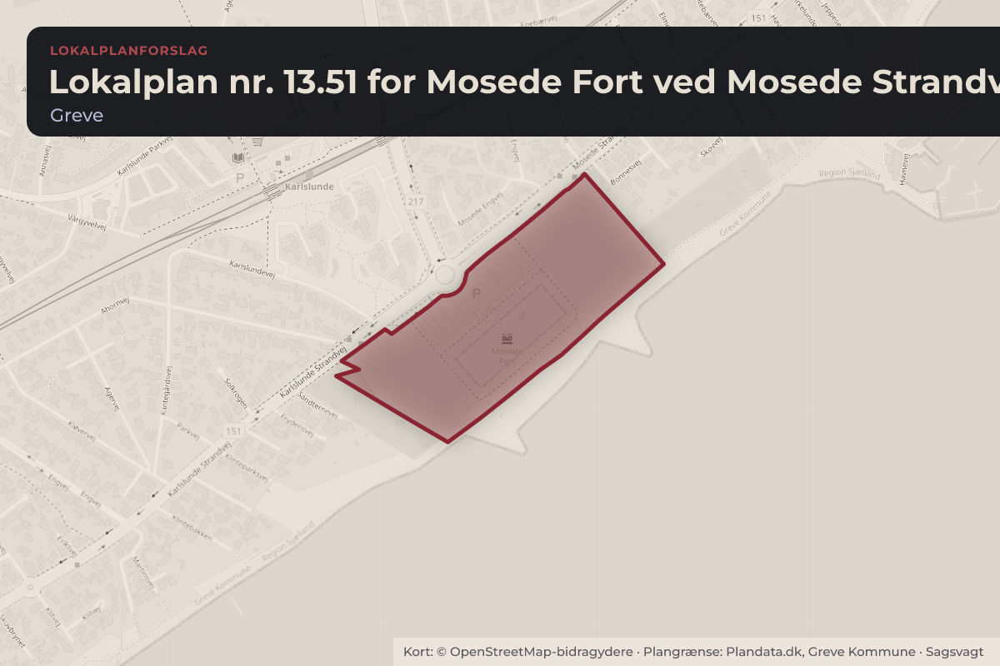
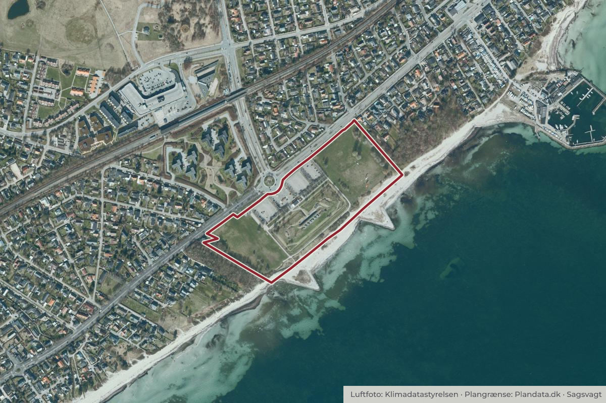

På dagsordenen 16. november, Plan- og Klimaudvalget, Greve
Lokalplan nr. 13.51 Mosede Fort ved Mosede Strandvej 87A, Endelig vedtagelse
Byggeri og lokalplanerKultur og fritid

Kort: © OpenStreetMap-bidragydere. Plangrænse: Plandata.dk, Greve Kommune.

Kort fortalt
- Hvem
- Plan- og Klimaudvalget, Greve Kommune
- Hvornår
- Mandag 16. november 2026
- Status
- På dagsordenen. Sagen behandles på mødet.
Er noget forkert her? Skriv til os
Hvad kan du gøre?
- Skriv til politikerne
- Udvalgets møder er lukkede, men du kan skrive til medlemmerne før mødet mandag 16. november 2026. Du finder dem på greve.dk.
Læs hele sagen Kommunens egen tekst
Indstilling
Administrationen indstiller, at det godkendes, at Lokalplan nr. 13.51 for Mosede Fort (bilag 1)
samt den tilhørende sammenfattende redegørelse af miljøvurderingen (bilag 2) vedtages
endeligt.
Sagsfremstilling
Forslag til Lokalplan nr. 13.51 for Mosede Fort ved Mosede Strandvej 87A inklusiv den
tilhørende miljøvurdering blev vedtaget til offentlig høring af Byrådet den 22. juni 2026 (punkt
14) og har været sendt i 9 ugers offentlig høring fra den 29. juni til og med den 31. august
Administrationen har nedenfor fremhævet nogle af de væsentligste forhold, som lokalplanen
regulerer:
Lokalplanen sikrer via formålsbestemmelserne, at Mosede Fort kan udvikle sig til et
museum, som kan skabe rum for moderne udstillinger, samtidig med at Mosede Fort som
fredet fortidsminde bevares.
Lokalplanen giver mulighed for nye stier og belægninger i området og stiller krav om, at
ankomst- og forarealet til museet skal opleves åbent og imødekommende fra Mosede
Strandvej.
Den nye museumsbygning skal indpasses i områdets terræn og harmonere med
eksisterende træer/bevoksning, som bevares. Bygningen skal opføres med grønt tag
samt med store vinduer, som giver udsigt over Køge Bugt.
Forslag om teknisk rettelse af lokalplanens titel
Der har tidligere været en vej ned til strandområdet ved Mosede Fort, som hed Fortvej. Vejen
blev nedlagt i forbindelse med den endelige vedtagelse af Partiel Byplanvedtægt nr. 23 i 1976.
I forbindelse med udvidelsen af Mosede Fort med den nye museumsbygning er der forslag fra
Museet og administrationen om, at vejen fra rundkørslen og frem til fortet kunne hedde Fortvej.
Museet vil dermed få adressen Fortvej 1, hvilket vil styrke den stedsspecifikke identitet, se
bilag 4 Hvidbog. Selve ændringen af vejnavnet sker ikke med lokalplanen men via en sag i
Trafik- og Miljøudvalget.
På baggrund af dette forslås det derfor at ændre titlen på lokalplanen fra "Lokalplan nr. 13.51
for Mosede Fort ved Mosede Strandvej 87A" til "Lokalplan nr. 13.51 for Mosede Fort".
Forslag om teknisk rettelse af bevaringsværdigt beplantningsbælte og bestemmelse om
dette
Administrationen foreslår at justere lokalplanens kortbilag 4 og 4A, så beplantningsbælte B3
forlænges. Samtidig foreslås det at tilføje en bestemmelse i § 8.3 om, at beplantningsbælte B3
må gennembrydes ét sted for at etablere en vejadgang til varelevering til spisehuset og museet
samt til dagrenovation. Ændringen foreslås, fordi adgangsvejen af trafiksikkerhedsmæssige
årsager ikke kan placeres helt ud mod Karlslunde Strandvej som tidligere illustreret.
Uagtet ændringen, vurderes oplevelsen af beplantningsbæltet fortsat at være opretholdt, da
beplantningsbæltet fortsat vil fremstå som en samlet trærække, der leder mod museet.
Ændringen vurderes derfor at være af mindre karakter og ikke at kræve fornyet høring.
Sammenfattende redegørelse
I forbindelse med den endelige vedtagelse af planer, hvor der er udarbejdet miljøvurdering,
skal der udarbejdes en sammenfattende redegørelse, som beskriver:
hvordan miljøhensyn er integreret i planen,
hvordan miljøvurderingen og høringssvarene er indarbejdet i planen,
hvorfor den vedtagne plan er valgt frem for de rimelige alternativer, der har været
behandlet,
og hvordan planens væsentlige miljøpåvirkninger vil blive overvåget.
Der kom ikke nogen høringssvar rettet mod konklusionerne i miljøvurderingen af
lokalplanforslaget. Den sammenfattende redegørelse kan læses i bilag 2, og den offentliggøres
sammen med den endeligt vedtagne lokalplan.
Lovgrundlag
Planloven og Miljøvurderingsloven.
Økonomiske konsekvenser
Sagen har ingen økonomiske konsekvenser for Greve Kommune. De afsatte anlægsmidler til
totalrådgiverkontrakten er frigivet med Byrådets godkendelse af sagen den 23. april 2025 (pkt.
Høring
Forslag til Lokalplan nr. 13.51 for Mosede Fort ved Mosede Strandvej 87A og den tilhørende
miljøvurdering har været i 9 ugers offentlig høring fra den 29. juni til og med den 31. august
I høringsperioden modtog Greve Kommune fire høringssvar. Fælles for alle høringssvar er, at
de støtter op om lokalplanforslaget om den nye museumsbygning ved Mosede Fort. Tre
høringssvar indeholder forslag til fokusområder, som afsenderne mener, kan og bør være
relevante i den videre proces. Dette omfatter blandt andet tilgængelighed for alle, gode
muligheder for at tage med offentlig transport til det nye museum samt mulighed for, at også
børn kan lege i området. Et enkelt høringssvar relaterer sig mere til, hvordan Mosede Fort
området som helhed, med den nye museumsbygning, vil fungere sammen med den rekreative
anvendelse af kyststrækningen mellem fortet og Mosede Havn.
De fire høringssvar er givet til lokalplanforslaget, dog omtaler høringssvaret fra Movia også
emner, som er behandlet i miljøvurderingen af lokalplanen. Da høringssvaret primært retter sig
mod lokalplanen, og den efterfølgende bygge- og driftsfase for museet, så er høringssvaret
behandlet i hvidbogen og ikke i den sammenfattende redegørelse.
Alle høringssvarene kan læses i deres fulde ordlyd i bilag 3, og administrationens svar på
høringssvarene kan læses i hvidbogen, bilag 4. Ingen af høringssvarene har givet anledning til
ændringer i lokalplanen.
Kommunikation
Den endelige vedtagelse af lokalplanen annonceres og offentliggøres på kommunens
hjemmeside samt på Plandata.dk efter Byrådets behandling.
Tidsplan
Ultimo december 2026: Lokalplanen offentliggøres, hvorefter den kan påklages til
Planklagenævnet i fire uger.
Kilde: Greve Kommune, Plan- og Klimaudvalget, dagsorden fra mødet mandag 16. november 2026, punkt 6. Læs den originale sag hos kommunen.